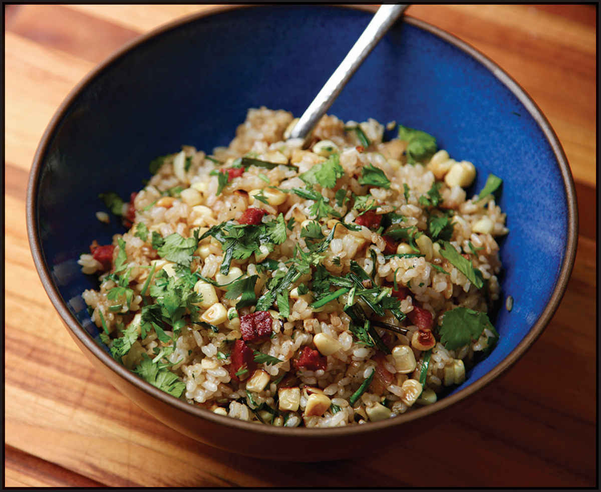

EASY PORK FRIED RICE WITH CORN AND SHISHITO PEPPERS
Yield Serves 2 or 3 |
Active Time 15 minutes Total Time 15 minutes |
If using fresh rice, rinse the rice well before cooking, and once cooked, transfer it to a rimmed baking sheet set by a breezy window or under a fan for 1 hour before continuing with step 2. Spanish-style raw cured chorizo comes in sticks, like salami or pepperoni. I like Palacios brand, which is available at many online retailers, such as LaTienda.com. Spanish chorizo should not be confused with Mexican-style raw chorizo or other Latin American chorizos. You can use a blowtorch to add wok hei to the rice in step 3.
INGREDIENTS
2 cups cooked white rice (12 ounces/340 g) (see Notes)
2 tablespoons (30 ml) peanut, rice bran, or other neutral oil
3 to 4 ounces (90 to 120 g) Spanish-style raw cured chorizo, skin removed, finely diced (see Notes)
6 ounces (170 g) fresh corn kernels, cut from 1 to 2 ears
2 scallions, sliced, whites and greens reserved separately
12 shishito peppers, thinly sliced, or 1 medium green bell pepper, finely diced (about 6 ounces/170 g)
1 teaspoon (5 ml) light soy sauce or shoyu
1 teaspoon (5 ml) roasted sesame oil
Kosher salt
Small handful of chopped fresh cilantro leaves
This recipe was a product of an overstuffed fridge, as fried recipes often are. I happened to have some leftover pork tenderloin. It was also summer, which means that I have a near-endless supply of corn and shishito peppers in my fridge at all times (those two are fantastic partners in crime), and a stick of Spanish-style raw cured chorizo is never far from reach in my house. Put it all together, and what do you get? This simple pork fried rice with charred corn and peppers.
I start by stir-frying the diced chorizo until sizzling, then remove it and cook the corn directly in the rendered chorizo fat. When cooking the corn, I make sure to leave it in the wok long enough to get some nice dark charring on it. Unlike many other vegetables, corn doesn’t get mushy if you overcook it, nor does it lose its flavor. If anything, its flavor intensifies as it gets darker. Shishito peppers, on the other hand, need to be cooked hot and fast to keep their fresh green crunch.
If you don’t have chorizo, don’t worry—this recipe is just as tasty with ham, bacon, or no meat at all.
Swap out shishitos for green bell peppers or omit them entirely. Got half an onion sitting around? Use that instead of the scallions. The whole point of a 15-minute recipe like this is to keep things simple, so just relax, OK?
DIRECTIONS
1 If using day-old rice (see Notes), transfer it to a medium bowl and break the rice up into individual grains with your hands before proceeding.
2 Heat the wok over high heat until very lightly smoking. Add 1½ teaspoons (8 ml) of the oil and swirl to coat. Add the chorizo and stir-fry until the fat is rendered and the chorizo is crisp around the edges, about 1 minute. Transfer the chorizo to a bowl, leaving the fat in the wok.
3 Return the wok to high heat until lightly smoking. Add the corn and cook, stirring occasionally, until lightly charred on several surfaces, about 4 minutes. Transfer to the bowl with the chorizo.
4 Return the wok to high heat until lightly smoking. Add another 1½ teaspoons of the oil and swirl to coat. Add the scallion whites and peppers, and stir-fry until lightly softened and fragrant, about 1 minute. Transfer to the bowl with the corn and chorizo.
5 Return the wok to high heat until lightly smoking. Add the remaining tablespoon of oil and swirl to coat. Add the rice and cook, stirring and tossing, until the rice is pale brown and toasted and has a lightly chewy texture, about 3 minutes (see Notes).
6 Return the corn, chorizo, and pepper mixture to the wok. Add the soy sauce and sesame oil and toss everything to combine. Season with salt to taste. Add the scallion greens and cilantro and toss to combine. Serve immediately.
